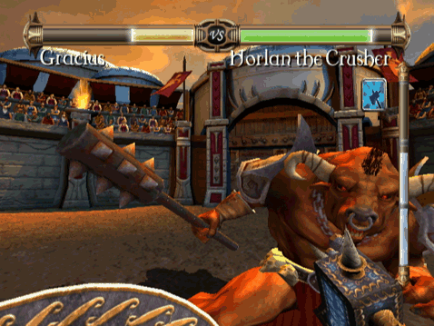
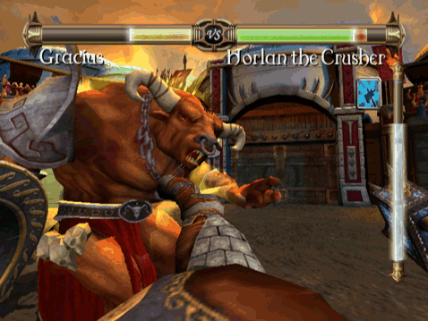

Anche se evitare gli attacchi nemici è una buona strategia, una strategia ancora migliore è eseguire dei contrattacchi. Questa tecnica prevede l'attaccare il nemico mentre sta per colpirti, invece che aspettare e schivare il suo attacco. I contrattacchi ti faranno guadagnare molta energia.
Ecco un esempio:

Horlan il distruttore sta preparando il suo attacco.
Nota che un attacco in alto a sinistra o a destra lo mancherà, visto che si è abbassato.
Inoltre, anche un attacco in basso a sinistra lo mancherà, essendosi inclinato a destra.

Un attacco in basso a destra è la risposta giusta che gli impedisce di attaccarti.